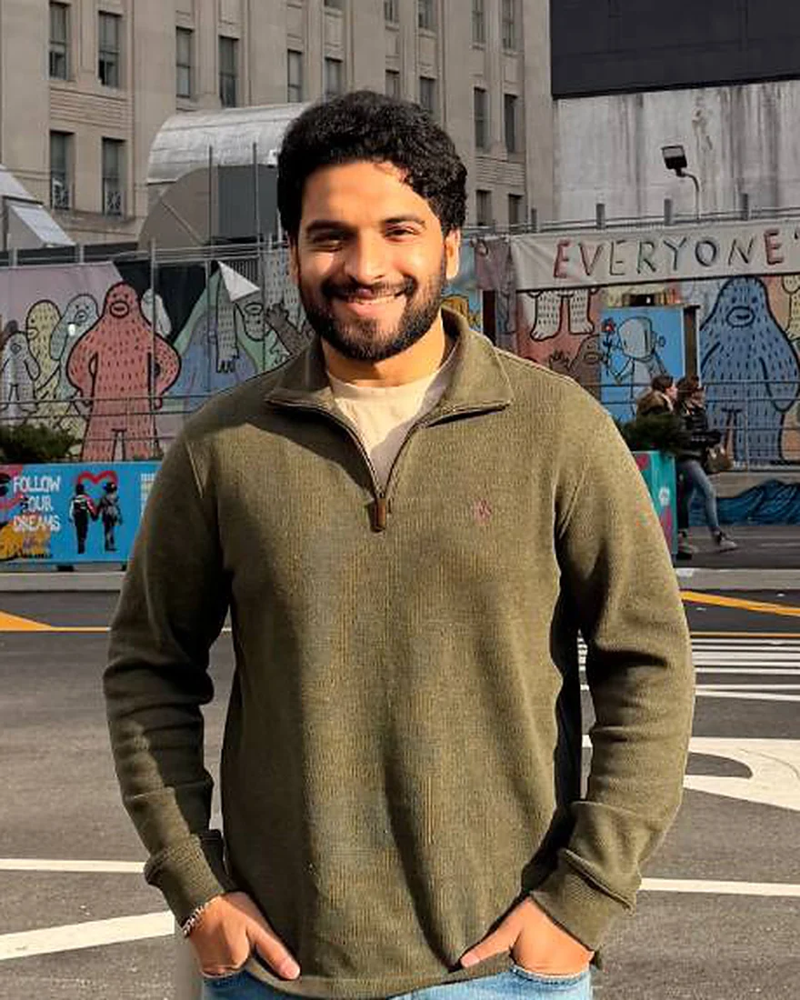

Solutions Consultant → AI Product Builder
Consulting mind.
Learning to
envision, build and deploy
AI products.
I spent two years as a Solutions Consultant turning enterprise client problems into product roadmaps, proofs of concept and go-to-market plans. Now I'm learning to use LLMs to take an idea all the way from the whiteboard to production.
- 12+enterprise clients across the Middle East & UK
- $1M → $1.2Mregional ARR grown through POCs
- 4 → 2 wksclient evaluation cycle, redesigned
- Best Data ScientistEY Case Competition, 2026
Selected work
Things I've shaped.
From enterprise strategy to hands-on AI builds. Select any project for the full story.
No projects match that search.
Approach
Consultant's instincts,
builder's toolkit.
-
01
Envision
Find the problem worth solving before touching a model.
From consulting
- Customer discovery
- Market & competitor research
- Phased roadmaps
With AI
- AI product strategy
- Opportunity framing
- PRDs & success metrics
-
02
Build
Prototype fast, with the business constraints built in.
From consulting
- Requirements gathering
- Solution architecture
- Custom dashboards
With AI
- LLMs & AI APIs
- RAG & agents
- AI-assisted Python
-
03
Deploy
Ship something people trust and actually adopt.
From consulting
- POCs that convert
- Stakeholder buy-in
- Go-to-market
With AI
- Evals & guardrails
- Human-in-the-loop
- Responsible AI
Career
Where I've been.
-
Expected Dec 2026
College Park, MD
University of Maryland, Robert H. Smith School of Business
MS, Information Systems & Artificial Intelligence
Focus on AI product strategy, digital transformation and business process analysis. Best Data Scientist Award (EY Case Competition, 2026). Terrapin Merit Scholar (2025).
-
Oct 2025 — Present
College Park, MD
Smith Masters Student Association
VP, Professional Development
Led 9 career-upskilling workshops across consulting, finance and tech (100+ attendees). Brokered a Dingman Center & MTP partnership that helped internship-seeking students land placements.
-
Feb 2023 — Apr 2025
Chennai · Dubai
Facilio Inc. · IoT-enabled facilities management SaaS
Solutions Consultant — Presales, Product Strategy, Market Research & GTM
Led discovery, POCs and go-to-market work for enterprise clients across the Middle East and UK. Grew regional ARR from $1M to $1.2M, halved evaluation cycles, and worked directly with the CPO on product-line strategy.
-
2018 — 2022
Chennai, India
Anna University
B.Eng., Electronics & Communication

About
The best AI products start with a good question.
As a Solutions Consultant I sat between enterprise clients and the product team, listening for the real problem underneath the RFP. I learned how to translate stakeholder needs into roadmaps, how to design a proof of concept that earns a signature, and how to tell the story to a board.
What I've found is that those same skills are exactly what AI products are often missing. So I'm pairing them with hands-on building: LLMs, retrieval, agents and evaluation, always with guardrails and a human in the loop where it matters.
Product
Strategy · Roadmapping · Customer discovery · PRDs · Prioritization · Agile · Product analytics · A/B testing
AI
Generative AI · LLMs · RAG · AI agents · Prompt engineering · AI evaluation · Human-in-the-loop · Responsible AI
Data & tech
SQL · Python (AI-assisted) · Power BI · Tableau · Git · REST APIs · AWS (foundational)
Emerging tech
Blockchain architecture · Tokenization · DLT · Private-to-public layer design
Contact
Have a messy problem
that could be an AI product?
I'd love to hear about it. I'm open to AI product and solutions roles, and always up for a good conversation.